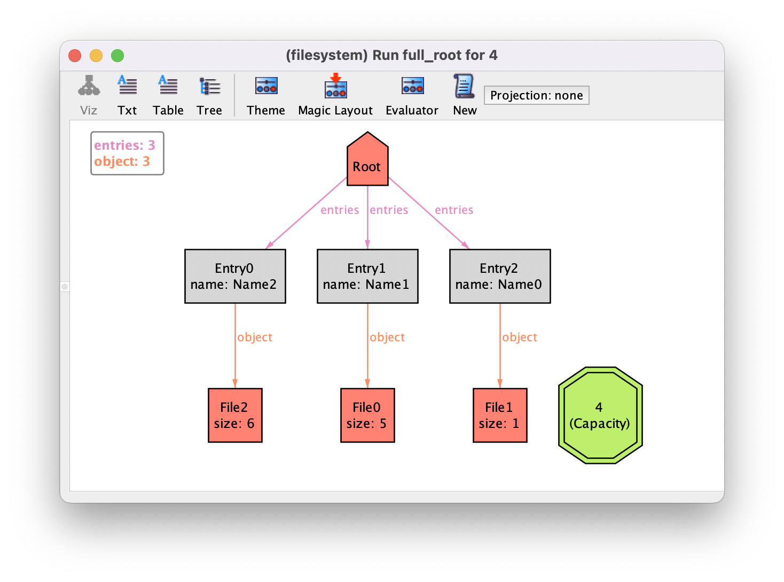

Working with integers¶
Although using integers in Alloy may seem like a harmless decision, they have some particularities that may lead to unpredictable behaviour. Moreover, due to the nature of the procedures behind the Analyzer, using integers actually may have considerable impact in the performance. Integers should only be used if the specification actually requires arithmetic operations. For instance, identifiers may be encoded as integers in the system implementation for convenience, but will only need to be be tested for equality. Thus, during the system design such an identifier can actually be represented by an uninterpreted atom. If we additionally need to, for instance, compare identifiers, this can be achieved by imposing a total order on the atoms of the signature. Nonetheless, there are of course situations where we actually need to perform arithmetic operations over integers. This chapter shows how this can be achieved in Alloy, and which pitfalls to be aware of.
Further reading
ordering moduleLearn how to impose a total order on a signature and avoid using integers unless absolutely necessary.
Models with integers¶
Integers are actually always enabled in every Alloy specification. For instance,
if you execute any run command with a default scope, and use the
Analyzer’s evaluator to check the value of expression Int you will get
the following set.
|
|
|
|
|
|
|
|
|
|
|
|
|
|
|
|
Int is the built-in signature containing all integer atoms. You can
also see that they always integrate the universe of discourse by
evaluating univ. You’ll also notice that these integers are finite
and that they are the 4-bit signed integers under Two’s-complement binary
representation. Being aware of these three points - integers are atoms,
bounded, and interpreted in binary - is essential to use integers in
Alloy soundly.
Signature Int can be used as any other signature in the model, except
that it cannot be extended (like all built-in signatures). Fields can have type
Int, and signatures can be declared as subsets of Int. For
instance, let us return to the file system example from chapter
Structural modeling and try to extend our model with file sizes. In
particular, we want to assign to each object an integer size, and also have a
distinguished integer atom representing the maximum capacity of the system. This
could be simply achieved as follows.
one sig Capacity in Int {}
abstract sig Object {
size : one Int
}
After running the empty run command example, we could get an
instance such as the following, after some theme customizations (by default,
unconnected nodes of Int are set to hidden; we’ve turned this off, set
all integer atoms to be hidden, but then only subset Capacity to be
shown).
Alloy model
Download and explore the files relevant for the model at this point of the book.
Further reading
In this section we mentioned the evaluator. Learn in more detail how to use it to debug specification.
Integer operations¶
Let us the Analyzer’s evaluator to explore how to manipulate integers. Integer
constants can occur in relational expressions (including in the model, unlike
other atoms). Start by evaluating, for instance, 1+2. While initially
surprising, getting the set of atoms {(1),(2)} was the only sensible
solution: as everything Alloy, expressions 1 and 2 are actually
singleton sets {(1)} and {(2)}, and + denotes the union
of relations. For another sanity check, evaluate 1-1. This evaluates to
the empty set {}, and not to the integer 0. Again, this is
because - is the relation difference operator. Notice that, since these
are valid relational expressions, no errors or warnings are thrown.
To perform arithmetic operations over integers, a special set of operators must be used. The table below presents the native integer operators supported by Alloy.
Operator |
Description |
Operator |
Description |
|
Addition |
|
Left shift |
|
Subtraction |
|
Right shift w/ zero extension |
|
Multiplication |
|
Right shift w/ sign extension |
|
Division |
|
Greater than |
|
Remainder |
|
Less than |
|
Minimum integer |
|
Greater than or equal to |
|
Maximum integer |
|
Less than or equal to |
|
Order relation |
|
Set to integer conversion |
The negation of the comparison formulas can also be written by placing the
negation operator next to the comparison operator (R not < S or R
!< S for not (R < S), for example). The expressions that we evaluated
above should actually be written as 1 fun/add 2 and 1 fun/sub 1.
As expected, the result is again a singleton set that contain a single integer
atom. By default, Alloy also imports a util/integer utility module that
provides friendlier function and predicate versions of these operators. Some of
those are listed below, but you can consult the full module through menu option
.
Function |
Description |
Predicate |
Description |
|
Addition |
|
Greater than |
|
Subtraction |
|
Less than |
|
Multiplication |
|
Greater than or equal to |
|
Minimum of a set |
|
Less than or equal to |
|
Maximum of a set |
|
Equal |
|
Maximum integer |
|
Positive |
|
Minimum integer |
|
Negative |
|
Order relation |
|
Non-positive |
|
Reversed order relation |
|
Non-nositive |
Since everything is a relation, integer operations actually apply to any set of
atoms, even if it not singleton integer atom. This is something that is not used
often, but since this throws no error, it is important to be aware of their
semantics (arithmetic over non-unary relations always throws a type-error).
Whenever an integer operation is applied to a set, the latter is implicitly cast
into a single integer value, and the resulting integer wrapped back into a
singleton set. The implicit conversion of set to an integer is done by applying
the sum operator. If the relation is a singleton set, this will just
result in the value of its atom, but if there are multiple integer values in the
set, they will be summed together. So (1+2).plus[3] is actually (the
singleton set) 6, and (1+1).plus[3] is still 4. Also, sum works
on sets that contain atoms other than integer: they will just be ignored. If the
set contains no integer atom (e.g., 3.plus[Root]), a type-error will
effectively be thrown. This also highlights a difference between the relational
= and the integer eq: while 1 = 1 + Root is false,
1.eq[1 + Root] is actually true.
Let us get back to the example and try to fix some of the issues evident in the instance above. For instance, we expect file sizes to be positive. This can be easily achieved with the following fact.
fact positive_sizes {
// All file sizes are positive
all f : File | gt[f.size, 0]
}
Another constraint that we would like to impose is that sum of the size of all
files is less than the established capacity. However, using the operators we’ve
seen so far, this is not possible to encode. At first sight, sum
File.size could perhaps be used to sum the size of all files. However, if there
are multiple files with the same size, that integer atom will only occur once in
File.size and thus the sum will yield an incorrect value.
This can be addressed with another important integer operator, the sum
quantifier (not to be confused with the sum unary operator). The
sum quantifier iterates over a set of atoms and adds up the value of an
integer expression over the quantified variable. Back to our example, the size
of all files could be written as sum f : File | f.size, iterating over
all files and summing their size. The following fact would enforce the
desired constraint on capacity.
fact below_capactiy {
// The sum of the size of all files cannot exceed the capacity
(sum f : File | f.size) <= Capacity
}
One last, but still very useful integer operator, is the cardinality
operator #, which calculates the number of atoms in a relation. For
instance for a given directory d, expression #(d.entries)
returns the number of entries of d. For instance, the following command
will search for instances where the root has 3 objects.
run full_root {
#(Root.entries) = 3
} for 4
Let us run this command and validate our model with the additional constraints. If you’re not aware of Alloy’s integer semantics, you may be surprised to find the following instance, where the sum of the size of the files clearly exceeds the capacity.
Alloy model
Download and explore the files relevant for the model at this point of the book.
Dealing with integer overflows¶
Alloy implements a wrap-around semantics for integers, and given the limited
number of available integer atoms, and the exhaustive nature of the Alloy
analyses procedures, integer overflows are a common issue that must be
addressed. With the default scope on integers they range from -8 to 7, so in the
instance above 5.plus[1].plus[6] is effectively -4, which is smaller
than the capacity 4 (you can test it in the evaluator).
The number of integer atoms available during analysis is defined by the scope on
Int on the command declaration, as for other regular signatures. This
scope does not set the number of integer atoms in the universe, but rather the
size of their bitwise representation. This scope is 4 by default, which results
in the 16 integers from -8 to 7. The scope for Int is always exactly
defined as the integers available with the specified bitwidth (unlike the other
signatures whose scope determines an upper-bound). Also, changing the overall
scope of a command does not change the scope on Int: it must be
explicitly set.
Nonetheless, our current model will exhibit overflows regardless of the scope for integers, because there are always instances where the size of the files will overflow. Although this may look cumbersome, overflows are a common issue in real systems, Alloy just happens to illustrate it in a smaller scale. So rather that completely forbid overflows, we should instead guarantee that our system model never reaches a state where such overflows occur. For instance, we can limit the size of objects with the following fact, that takes into consideration the maximum available integer and the number of objects in the universe.
fact size_limits {
// Guarantee file sizes do not overflow
all f : File | f.size <= div[max, #File]
}
Behind the curtain, the reason why integers behave like this in Alloy is because the Analyzer relies on SAT solvers for the analyses, which support only Boolean variables. Thus, integers are converted into bit strings during analysis, with a Boolean variable representing each bit, while integer operations are converted to their bitwise counter-parts. A side-effect of this is that large integer bitwidth scopes have a considerable toll on performance.
Alloy has the ability to ignore instances where any overflow
occurs. This can be turned on in the menu option . Any run command will no longer present instances
with overflows, and these will also be ignored when running check
commands. However, bear in mind that this will completely disregard instances
where any overflow occurs, which may give a false sense of security. For
instance, the obviously false check command below actually finds no
counter-example when overflows are forbidden.
check big_files {
all f : File | f.size > 10
}
This is because the constant 10 cannot be represented with the default bitwidth scope of 4 and overflows.
Alloy model
Download and explore the files relevant for the model at this point of the book.
Further reading
Throughout the chapter we’ve customized the visualization of instances. Learn in more detail how this can ease instance interpretation.